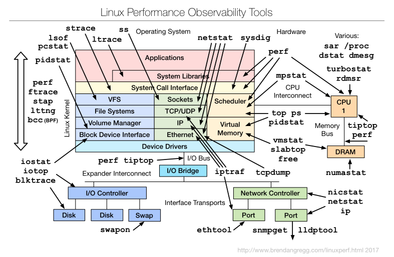

1. Introduction
In many computational environments, especially in clusters where jobs often run in batch mode disconnected from a user terminal, it’s difficult to determine why a job is running slowly or not at all. profilemyjobs & its batch wrapper pmj assist in profiling long-running jobs by capturing many system variables to a log and presenting them nearly real-time via gnuplot (if running in a connected terminal), or after the fact by running the autogenerated gnuplot script (see above).
profilemyjobs is the script that does much of the work. It is important to note that it is not a fine-grained execution profiler like oprofile or perf, but a very coarse-grained utility that takes about 2s to cycle thru its crude data collection (tho it does not take much in the way of CPU or RAM).
pmj is a wrapper script that takes a number of arguments, most of them pass-thru options for profilemyjobs and controls how it’s executed in a batch environment.
2. Features
profilemyjobs currently collects about 24 variables (see below), some slightly overlapping; it plots about 13 of them simultaneously to show what the major determinants are doing thru the course of the run so that bottlenecks can be easily and visually identified. The zoom/pan ability of gnuplot, the mouse-over variable reporting, and the log scale on the Y axis allow all the variables to be plotted on a single pane to be better coordinated.
3. Package Download
Until it shows up in GitHub, you can download the scripts pmj, profilemyjobs, scut, and stats in a single tarball here. Untar them and place them in a dir on your PATH and use. Let me know how they work.
4. Installation
Both pmj and profilemyjobs are bash scripts that call standard system utilities. The exceptions are 2 self-writ Perl utilities scut and stats which are included in the packaging and an Infiniband utility perfquery which is usually included in the OpenIB/OFED packages.
The one UCI-specific command is the module load gnuplot command in profilemyjobs at about line 207. If you don’t use modules, the error will be ignored. If you do use modules but call it something else, it may fail.
4.1. Dependencies
The dependencies below are tested to see if they exist. If not, it will complain.
4.1.1. gnuplot
4.1.2. scut
scut is a Perl script that does a lot of scut work for you. It acts as more flexible (but slower) version of cut and join.
4.1.3. stats
As its name suggests, stats is a Perl script spits out descriptive stats of anything that is fed to it on STDIN. Also does transforms on input data.
4.1.4. ifstat
ifstat is a standard Linux utility that produces a stream of bytes indicating how much TCP data IO is coming thru active Linux network interfaces. Note, TCP data only, not RDMA bytes. For that you need…
4.1.5. perfview (IB only)
perfview is a Infiniband byte counter, usually distributed with the OFED package. This utility is invoked only if you ask for IB monitoring and an IB interface is detected.
5. Operations
Both profilemyjobs and pmj will drop into their respective help pages if you append -h to the command. Otherwise, they will use the defaults and start logging.
5.1. profilemyjobs
profilemyjobs -h will produce:
profilemyjobs ver: 1.1.0, Aug 19, 2018, hjmangalam@gmail.com
(for more info, see: https://goo.gl/hSz8bf)
Usage: profilemyjobs options
NB: This script runs until it is explicitly killed
(usually by the associated 'pmj' wrapper)
Options: where [i]=integer; [s]=string
-u or --user [s] ($USER) login name of the user to profile
-c or --comment [s] comment to add to the logfile header and to the plot
-p or --period [i; secs] (15) sample cycle in seconds
-l or --logfile [s; path] (./profile.log_<user>_<timestamp>) full or relative
path to the logfile (about 400bytes per minute).
-i or --interface [s] (none) ifconfig interface name;
optional; if not given, will not be recorded
-h or --help prints this message.
-g or --gnuplot will simultaneously stream-plot a subset of the printed
data in if you have an active X11 session. Updates every 15s.
Test with 'xeyes'. If a pair of eyes pop up, you have a
compatible X11 session.
Use x2go <https://goo.gl/TbcjFU> to provide it if not.
NB: flag and option require a space between them.
ie '-p 5' is good; '-p5' is bad.
The gnuplot commands used to plot this profiling data have
been written to the file 'profile.gnuplot_<user>_<timestamp>'
using the standard logfile name 'profile.log_<user>_<timestamp>'.
You'll have to modify it to optimize the various scales, and
modify it to plot what you want.
Dependencies & Assumptions
- assumes 'gnuplot' version >= 4.6.2, compiled with the Qt
widgets. You can view the plot with the wx widget build,
but you won't be able to zoom or extract values with the
cursor.
- requires 'iotop' to be installed and if regular users will
use it, requires that it be installed such that those users
in the [iotop] group can execute it with 'sudo'. Enter the
following line into the '/etc/sudoers' file:
%iotop ALL=(root) NOPASSWD: /usr/sbin/iotop
- assumes 'perfquery' to query Infiniband counters, which is part
of the OFED utilities. If you don't have IB or 'perfquery', it
will ignored. You may get some gnuplot complaints, but it
should still work.
In the 'gnuplot', points showing bytes coming IN are in cool colors
(blue/green) and are represented by downward arrowheads. Points
showing bytes going OUT are in warm colors (red/pink/orange) and
are represented by upward arrowheads. (NB: in different versions
of 'gnuplot', colors are defined differently so while the symbols seem
to be stable, colors can apparently change. The colors here are defined
for 'gnuplot' v 5.0.3).
5.2. pmj
pmj -h will produce ..
pmj ver: 1.1.0, Aug 19, 2018, hjmangalam@gmail.com
(for more info, see: https://goo.gl/hSz8bf
Usage: pmj options
This is a control script that controls the execution of the
'profilemyjobs' script that does the real work. This script should
be used to start and stop the 'profilemyjobs' script when used in
a batch job or to make the script behave interactively as well.
So use 'pmj', not 'profilemyjobs' for the best experience with schedulers
(tested with SGE at UCI; should be similar with other schedulers).
Options: where [i]=integer; [s]=string (default)
NB: flag and option require a space between them
ie '-p 5' is good; '-p5' is bad.
-c or --command [s] (none) the command you want to profile (REQUIRED)
-u or --user [s] ($USER) login name of the user to profile
-p or --period [i; secs] (15) sample cycle in seconds
-b or --before [i; secs] (10) seconds of background BEFORE cmd
-a or --after [i; secs] (10) seconds of background AFTER cmd
-l or --logfile [s; path] (./profile.log_<user>_timestamp) full or
relative path to the logfile (about 400bytes per minute).
-i or --interface [s] (none) 'ifconfig' interface name; (optional)
if not given, will not be recorded. You will usually want
'ib0' on the HPC cluster ('eth0' on the compute-1[123]-x nodes)
-h or --help prints this message.
-g or --gnuplot will simultaneously stream-plot a subset of the printed
data in if you have an active X11 session. Updates every 15s.
Test with 'xeyes'. If a pair of eyes pop up, you have a
compatible X11 session.
Use x2go <https://goo.gl/TbcjFU> to provide it if not.
You'll need gnuplot >= ver 4.6.2 compiled with the Qt widgets
to use the interactive qt plot window. You can view the plot
with the wx widget build, but you won't be able to zoom or extract
values with the cursor.
Example qsub script (for UCI's HPC cluster)
=========
#!/bin/bash
# SGE Directives
#$ -q free*,gpu* # use these Qs
#$ -cwd # run out of the current dir
#$ -j y # merge the STDOUT and STDERR into one file
#$ -N hjm_tacg # SGE job name
#$ -S /bin/bash # use real bash
#$ -M ${USER}@uci.edu # mail me. (${USER} will pick up YOUR user name. )
#$ -m be # when the job (b)egins, (e)nds
module load tacg # loads the tacg module to set PATHs
# Where the data is.
DDIR=/data/apps/commondata/Homo_sapiens/UCSC/hg19/Sequence/Chromosomes
# the actual full command is:
# tacg -n6 -slLc -S -F2 < $DDIR/chr1.fa > tacg.junk
# which is how you submit it to pmj **IN QUOTES** as below
# Keep STDIN/OUT/ERR inside the quotes and if your own command
# includes double quotes ("), you'll have to escape them (\")
pmj -b 15 -a 15 -p 2 -i ib0 -c "tacg -n6 -slLc -S -F2 < $DDIR/chr1.fa > tacg.junk"
=========
('pmj' will also prefix the command with '/usr/bin/time -v' to capture
some useful parameters from the run. Save and share that output with
your labmates.)
The gnuplot commands used to plot this profiling data have been written
to the file 'profile.gnuplot_<user>_<timestamp>'.
(At >30,000 time points, the gnuplot user experience gets a bit slow.)
You may have to edit it to optimize the various scales, and modify it to
plot what you want.
Also read the 'profilemyjobs -h' output for more related info.
Thanks for using 'pmj' & 'profilemyjobs'.
Tell me how to make it better: <hjmangalam@gmail.com>
6. Extended Variable Descriptions
These are the variables recorded by profilemyjobs. Only the ones with a superscripted * are displayed in the plot by default. Due to space constraints, some plot labels are contracted and the contractions that are different are included (in parens).
The code that was used to generate the variable is shown, in most cases taken directly from the script.
|
|
Apparent Conflicts
Many Linux utilities that seem to measure the same thing can conflict, due to timing/averaging issues, or to probing different parts of the kernel. A good overview from the fabulous Brendan Gregg perf page is shown here:  And as an example, here’s a discussion of some of the issues surrounding the iotop measurement of SWAPIN. I hit on the above discussion when I noticed that in one recording, amount of swap used was increasing but USER swap (the user was root) was staying at zero. Related, the amount of swap reported by free vs top can be dramatically different. Ergo, multiple tools can give different views into the actual workings of the system. |
If the code or the explanation is mistaken, I would like to be corrected. Ditto if you can suggest a better or more accurate mechanism for extracting the values or can suggest other variables that would help significantly. Just send me a quick email
6.1. # sec
The number of seconds since the start of the recording. This number is not affected by the variable timing of the looping thru the recording. ie if you asked for a period of 5s, the loop timing will be approximately 5s, but this number is the ACTUAL number of seconds since the start by querying date +%s.
6.2. # user PIDs *
The count of the number of USER processes that ps returns:
ps -ew -o uname,pcpu,pmem | grep ^$user | wc -l
6.3. CPU Cores *
(Ttl User cores) The sum of all the top-averaged CPU processes owned by the USER
top -b -n 1 -u $user | grep $user | sed -e 's/^[[:space:]]*//' | scut -f=8 | awk '{s+=$0}END{print s}'
This value is often different that what ps returns since ps returns the average CPU use of the process over its lifetime, so it is a much longer term average. The value that top returns is averaged over its cycle time, usually 2s, so it is much closer to a real-time value. Obviously in true real-time, a process is either executing or not executing, so this value integrates on-CPU time over the top cycle.
6.4. Mean CPU *
(User Avg %CPU) Indicates the average CPU usage of all user processes over their lifetimes, as opposed to CPU Cores above. See the differences noted there about how these 2 values differ.
ps -ew -o uname,pcpu,pmem --sort=-pcpu,+pmem | grep $user | scut -f=1 | grep -v '0.0' | stats --gfmt 2> /dev/null | grep Mean | scut -f=1
6.5. Total uRSSG *
(User RSS) The total Resident Set Size (RSS) of USER-owned processes.
ps -ew -o uname,pcpu,rss --sort=-pcpu,+rss | grep $user | scut -f=2 | awk '{s+=$0}END{print s}'
This is a useful (but confusing) estimate of how much RAM a process is using. Confusing since utilities like top use various estimates of how much RAM a process is using. RSS is perhaps the most useful, but there is also the Virtual memory (VIRT in the top display. The top man page describes this value as including "all code, data and shared libraries plus pages that have been swapped out and pages that have been mapped but not used." In other words, any memory space that could possibly be related to the process. The last estimate of a process' memory usage is the Shared memory (SHR in top) which is "the amount of shared memory available to a task, not all of which is typically resident. It simply reflects memory that could be potentially shared with other processes." In other words, the space that could be addressed by the use of shared libraries (libXX.so) or the potential memory that could be used.
So … RSS is probably the best estimate for how much RAM is directly dedicated to your process.
Note that if you’re running profilemyjobs for the root user, there may be literally thousands of processes, some of which have zero effective RSS size. Those PIDs are excluded from the RSS calculation because it takes too long to cycle thru them all, but they are counted in the total user PID count.
|
|
Linux is smart about RAM.
It may often look like you have very little RAM left, even on very large-memory nodes. The reason for this is that Linux (and all modern OSs) has decided that RAM is very expensive and it should be working as much possible. See this quick (if incomplete) read about how Linux uses RAM. Therefore, the system silicon memory (aka RAM) is also doing lots of smart things under the covers to maximize the efficiency of the system overall. In addition to using some RAM to run system and user processes, Linux is also using some as a filecache which keeps chunks of recently read files in RAM in case they’re needed again. This is obvious when you time an operation the first time and then repeat the same operation. The second time it’s MUCH faster, since a lot of the file is already in RAM. Linux is also using some of the RAM for other buffers related to other IO. In top, this value is called buffers. Recent versions of top now combine the filecache and buffer terms into one value called buff/cache. And finally, the typically half the system RAM can be used as temporary filesystem (called /dev/shm much like /tmp or /scratch, but much, MUCH faster). As on /tmp, you can make your own directories on /dev/shm, but be sure to delete those files as soon as you’re done to allow that RAM to service other requests. |
6.6. Tmem,GB
These values provide estimates of the used and free system RAM, based on the descriptions above and converted to GB from their native KB. Both use data from /proc/meminfo.
6.6.1. used
memtotal=`grep MemTotal /proc/meminfo | scut -f=1
echo "scale=2;${memtotal}-${tmemfree}" | /usr/bin/bc
6.6.2. free *
(Free RAM)
grep MemFree /proc/meminfo | scut -f=1
6.7. swap used *
swap is a mechanism where stale data residing in silicon RAM is written to disk to free up RAM for other processses that need it more urgently. See paging. This variable shows how much swap is actually used, since sometimes swap is used previously and then that data becomes stale and is not ejected from the swap partition.
In an HPC context, if this value increases thr the course of the run, it implies that the system RAM is full and the processes running may effectively halt since accessing data from disk is 5-7 orders of magnitude slower than from RAM. Hence any increase in use of swap space is a reason for concern. You can usually map your RAM use to the system RAM to see if it’s YOUR processes that are responsible for driving the computer into swap. Note that due to the way jobs are scheduled, it’s impossible to predict how much RAM ALL processes will take up. If you requested a minimum amount of RAM for your job, that RAM will be free at the start of your job, but there’s no guarantee that it will be free DURING your job run. This may be possible to address with a new scheduler in the next cluster, but it won’t happen soon.
cat /proc/swaps | grep -v Used | scut -f=3
6.8. % /tmp used *
(/tmp used) /tmp (aka /scratch) is a partition of the local disk storage (Solid State or spinning disk) that is dedicated to temporary data. It can be written to by normal users and there are a lot of programs that use it to store such data in the course of a run. Should it reach 100% full, many programs will either crash or simply lock up, waiting for space to free up.
Hence in the HPC context, if you see the /tmp space increase quickly, send the HPC admins a quick email to seeif they can quickly delete some of the mess left by a previous user who probably didn’t clean up after themselves.
read -r tottmp freetmp <<< `df -h / | grep dev | scut --od=" " -f='1 2' | tr -d 'G'`
6.9. loadavg
Load on a computer is not simply the amount of CPU that is being consumed as is widely assumed. Rather, it is a measure how many processes want access to a CPU core. The following variables
read -r load1m rprocs tprocs<<< `cat /proc/loadavg | cut -f1,4 -d " " | tr '/' ' '`
6.9.1. 1m *
(1m LoadAvg) This is the load1m variable above (the load average over 1 minute), the most responsive measure of that variable.
6.9.2. exec
This variable (rprocs above) is the number of processed executing real-time. As such, it should never be higher than the number of CPU cores, tho with HyperThreading (HT) turned on, it can be as high as 2 times the number of physical cores, since many modern CPUs (mis)represent themselves as having the HT number of cores.
6.9.3. tot
This is the tprocs variable above, which indicates the total number of processes needing a core to execute on. It’s another proxy for how busy the system is.
6.10. System IO
These numbers refer to the amount of data the system (ALL processes) is ingesting or emitting at the time of the query. This number is typically higher than the network data values below since it often includes network data via NFS or other network storage. However especially if your application is using /tmp heavily, this number will rise much higher and these values can help discover if your bottleneck is the saturation of the local storage (if it’s a single disk, about 100MB/s).
Note that for this command to work for normal users, iotop has to be made suid via sudo. Otherwise, it’s a root-restricted command, since its use can leak information about filenames of other users. Check with your local admins about this. We have enabled it for a restricted set of users via an iotop group.
You can similarly enable this on your system via a mod of the sudoers file. Enter the following line into the /etc/sudoers file:
.. %iotop ALL=(root) NOPASSWD: /usr/sbin/iotop ..
The values in and out are derived from the following command:
read -r ttlrd ttlwr <<<$(sudo iotop -qq -o -n 1 -P -k -b -u $user | tr ':' ' '| tee $iotmp | grep Tota[l] | scut -f='3 9')
(Note that the output of iotop is tee-saved to a temp file called "$iotop" for later processing. Call it iotmp if you are trying to replicate the command.)
6.10.1. in
This variable is the ttlrd above.
6.10.2. out
This variable is the ttlwr above.
6.11. Total User IO
These numbers reference the amount of IO that the user’s processes are performing, separate from the total system IO reported above, but they use the same data saved to $iotmp.
6.11.1. in *
(User Read) The sum of USER reads from $iotmp.
grep -v DISK $iotmp | sed -e 's/^[[:space:]]*//' | scut -f=3 | awk '{s+=$0}END{print s}'
6.11.2. out *
(User Write) The sum of USER writes from $iotmp.
grep -v DISK $iotmp | sed -e 's/^[[:space:]]*//' | scut -f=5 | awk '{s+=$0}END{print s}'
6.12. User swap *
This value shows the instantaneous amount of swapping by the USER processes. ie: if the swap value above is increasing, but this value is not showing up in the log, then your application is not to blame; something else is causing the paging to happen.
grep -v DISK $iotmp | sed -e 's/^[[:space:]]*//' | scut -f=7 | awk '{s+=$0}END{print s}'
6.13. Average IOwait% *
(Av IOWait) This is one of the most important values to watch since it indicates that a process is waiting for data to be read or written. This is one of the signals that your application is IO-bound, so watch for the IOwait symbol to show up. (The actual symbol will differ, depending on the version of gnuplot your system has, but the legend will show it).
grep -v DISK $iotmp | sed -e 's/^[[:space:]]*//' | scut -f=9 | stats 2> /dev/null | grep Mean | scut -f=1
6.14. N
This value simply represents the number of USER processes that are currently engaged in measurable IO. If a process is not doing IO (ie, it’s computing on data already in RAM), it will not show up here.
grep -v DISK $iotmp | sed -e 's/^[[:space:]]*//' | scut -f=9 | stats 2> /dev/null | grep Number | scut -f=1
6.15. net
These network numbers have an increasingly large role in research computing, especially in a cluster context where most data resides on network data devices, from single RAID NAS servers to parallel distributed filesytems like BeeGFS and Lustre. This is made more complicated because the native transport of the latter filesystems is often over Remote Direct Memory Access (RDMA), using native Infiniband packets which do not show up in most networking utility measurements (because they’re not TCP packets). So I’ve used different utilities to capture both TCP and RDMA traffic in this log.
profilemyjobs will only monitor 1 network interface, but will attempt to measure both TCP and RDMA data on that interface.
TCP IO is read simultaneously the output of ifstat.
read -r netin netout <<< `ifstat -i $IFACE -t 1 1 | tail -1 | scut -f="1 2"`
6.15.1. TCP in *
TCP incoming is the netin variable above.
6.15.2. TCP out *
TCP outgoing is the netout variable above.
6.15.3. RDMA in / out *
The RDMA stats are generated by repeated calls to perfquery before and after the wait period.
RBX=`perfquery -x | grep XmitData | cut -f2 -d: | sed -e 's/\.*//g'`; RBR=`perfquery -x | grep RcvData | cut -f2 -d: | sed -e 's/\.*//g'`; sleep $PERIOD RAX=`perfquery -x | grep XmitData | cut -f2 -d: | sed -e 's/\.*//g'`; RAR=`perfquery -x | grep RcvData | cut -f2 -d: | sed -e 's/\.*//g'`; XMIT_RDMABW=`echo "scale=4; ($RAX-$RBX)/256/$PERIOD" | bc`; # KB/s (see man perfquery) RECV_RDMABW=`echo "scale=4; ($RAR-$RBR)/256/$PERIOD" | bc`; # KB/s
6.16. Local_Time
This is simply a call to date to enable matching the runtime to other log events.
datestmp=`date +"%a_%T"`
7. But why not …
7.1. Open XDMoD
Open XDMoD is infrastructurification of simple utility like profilemyjobs. It requires a few days to install and debug and then careful care and feeding to keep it running. One of our sysadmins (Imam Toufique) installed it over the course of several days on our cluster and while parts of it work and it provides a comforting interface, the parts that we need for doing what profilemyjobs does, don’t, hence on to other, simpler options. The parts are available, such as CPU usage, Memory usage, network usage, etc, are also shown in separate panes that are not viewable simultaneously, so that discovering the interaction among them is difficult. It does have some cluster-wide tools for profiling jobs running over multiple nodes that profilemyjobs can’t show without starting it simultaneously on multiple nodes.
In short, it does a lot more than profilemyjobs, but profilemyjobs is arguably better at doing the things that it is meant to do, and it does them much more simply.
7.2. Performance CoPilot
Performance CoPilot (PCP) is what would result if I had OCD and dedicated the best part of the next couple of years to improving and optimizing profilemyjobs. PCP came out of SGI and I have to admit it’s a pretty amazing system. You can pick and choose a bazillion variables to record and visualize. The problem then becomes: what do all these variables mean and how do you visualize them meaningfully within a timeframe that allows you to do work other than become a PCP expert. Consider profilemyjobs the very much lighter-weight and easier-to-use little brother of PCP. Also, while PCP has a stripchart visualizer, it’s not nearly as feature-complete as gnuplot. It does have APIs for Grafana and a host of other toolkits and languages, so it theoretically could be used to create custom visualizations that are quite beautiful.
It is also used now by XDMoD (see above) and so endows XDMoD with some simple performance extracts & features.
It can also consume logs from SAR (see below) and some other system loggers. It’s a very powerful and sophisticated system; perhaps too complex for mere human users.
7.3. SAR & ksar/ksar2
SAR is part of the systat package and produces performance logs in a similar vein as profilemyjobs and PCP. It is aimed at whole system performance and not so much at user-specific performance.
ksar (now a dead project; couldn’t get it to work) and ksar2 (a ksar fork) are Java-based systems for visualizing the SAR logs and suffer from the values in separate windows problem that is used in XDMoD and Remora below. They do have a nice interface which allows you to select variables to view interactively.
7.4. Remora
Remora, from the Texas Advanced Computing Center is a system profiler like the others and differs mostly in that it collects information during a run and then generates HTML pages and graphics that a user can view in a browser. That’s a very good approach, but the output is static, is available only after the run, and appears in separate pages, one per variable, so it’s difficult to integrate the information into a whole. Remora may be a spinoff or a variant or development fork of the tacc_stats cluster profiling system.